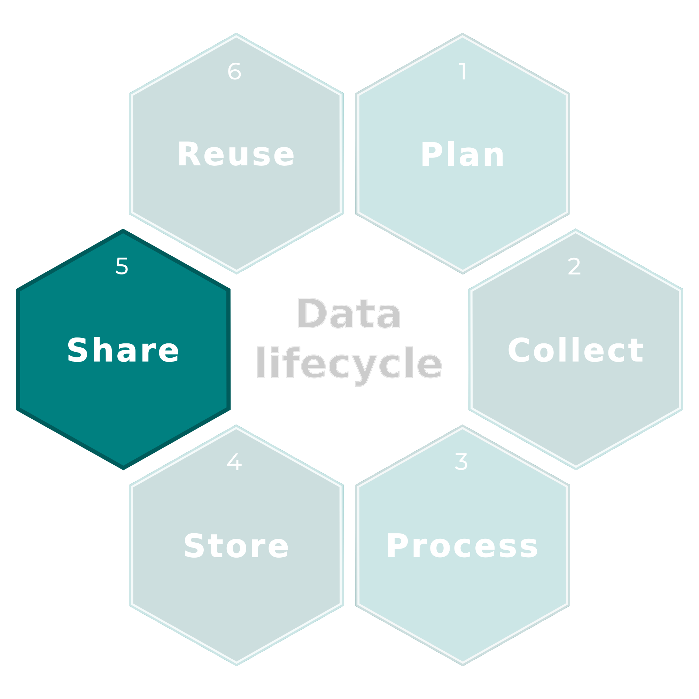
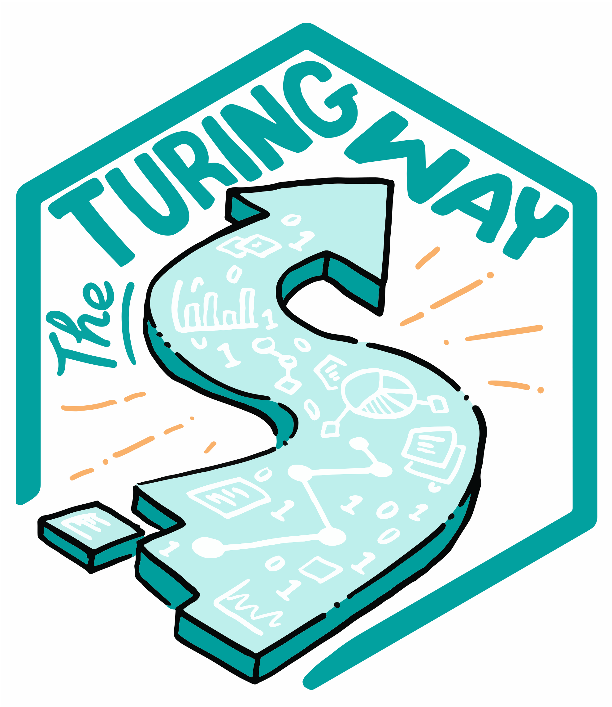
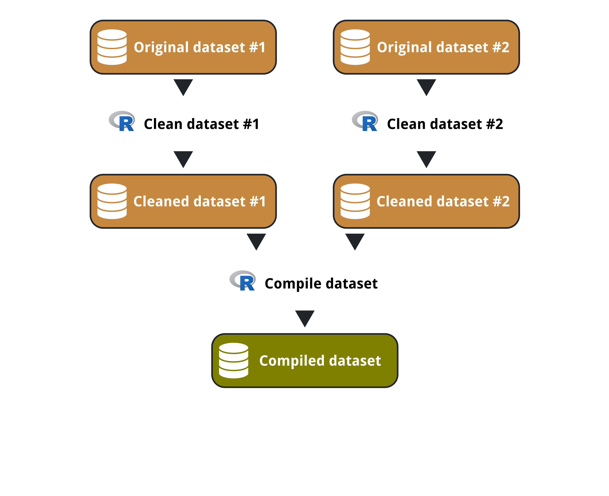
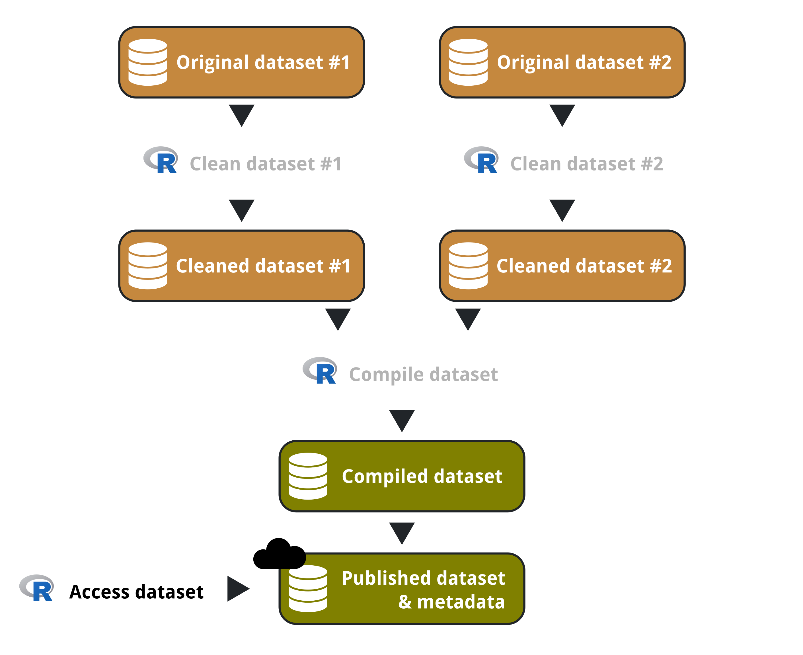
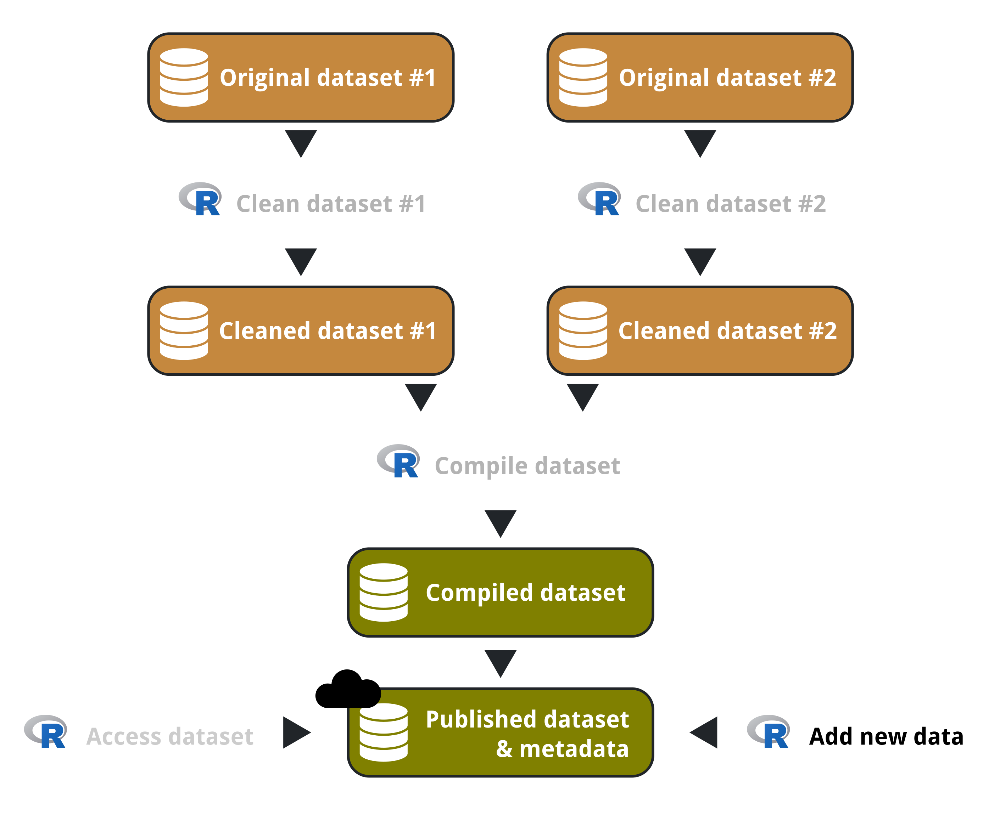
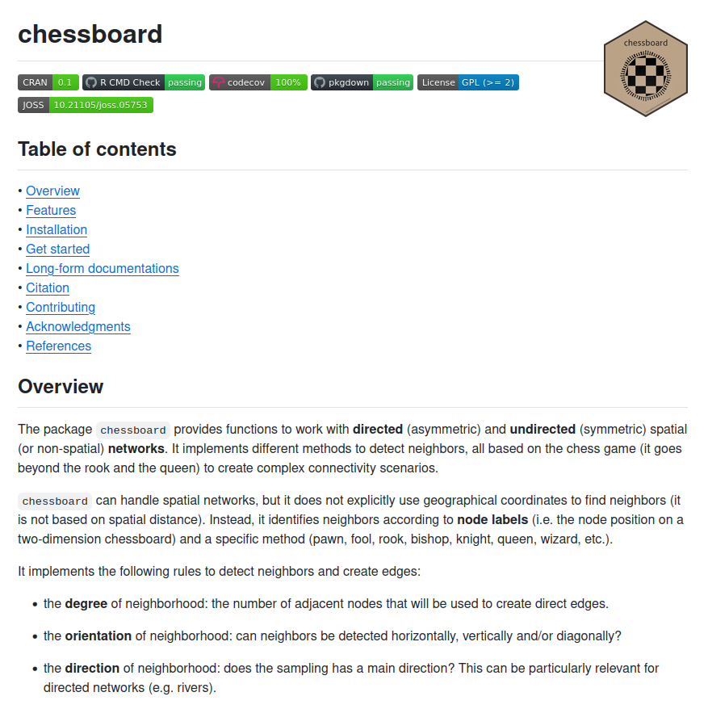
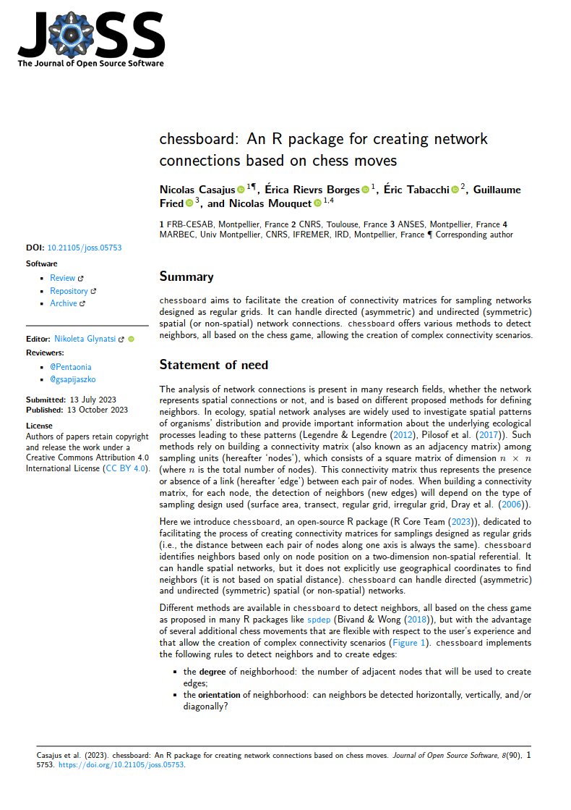

Data lifecycle

Data lifecycle

Acknowledgments
This presentation is strongly inspired by the chapter Software papers of the online book The Turing Way.

The Turing Way Community (2021) The Turing Way: A handbook for reproducible, ethical and collaborative research. Zenodo. https://doi.org/10.5281/zenodo.3233853.
What is a software paper?
- Share a new piece of software with the research community
- Close to traditional method papers
- Shorter than traditional articles (between 2 and 10 pages)
- Focus on describing the software and its use
What is a software paper?
- Share a new piece of software with the research community
- Close to traditional method papers
- Shorter than traditional articles (between 2 and 10 pages)
- Focus on describing the software and its use

Software paper about your pipeline
What is a software paper?
- Share a new piece of software with the research community
- Close to traditional method papers
- Shorter than traditional articles (between 2 and 10 pages)
- Focus on describing the software and its use

Software paper about a tool to access data
What is a software paper?
- Share a new piece of software with the research community
- Close to traditional method papers
- Shorter than traditional articles (between 2 and 10 pages)
- Focus on describing the software and its use

Software paper about a tool to add new data
Software papers - Examples
Software paper - Why?
- Advertise your code to an interested audience
- Increase the visibility of your code and community
- Improve your software through peer-review
In which journals?
Zoom on JOSS
Feedback on publishing in Journal of Open Source Software (JOSS)

